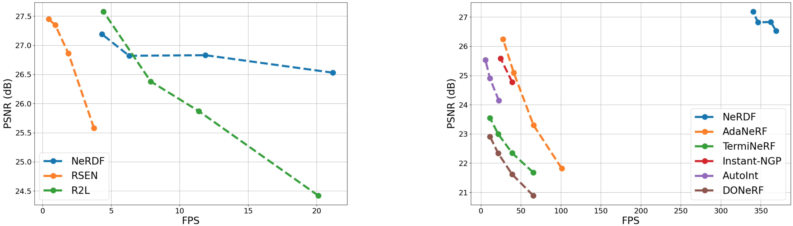

Results

Trade-off curves between PSNR and FPS of ours, NeLF-based methods (left), and NeRF-based methods (right), on Fern of the LLFF dataset.

Qualitative comparisons. Compared with a 16-layer R2L (R2L-16) that produces much blur, ours has a high quality.
BibTeX
@inproceedings{wu2023nerdf,
title={Efficient View Synthesis with Neural Radiance Distribution Field},
author={Yushuang, Wu and Xiao, Li and Jinglu, Wang and Xiaoguang, Han and Shuguang, Cui and Yan, Lu},
booktitle={The IEEE/CVF International Conference on Computer Vision (ICCV)},
year={2023}
}